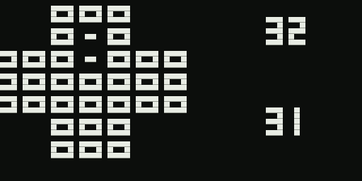

Cross
Graeme V. Samways · DREAMER no. 15 (1981-11) p. 15 1K RAM


Peg solitaire on a cross-shaped board: jump pegs horizontally or vertically over a neighbour into an empty square, removing the jumped peg. Try to leave as few as possible. The bottom score is pegs left and the top is the lowest of the series.
Keys
Column 1-7, row 1-7, then 5 up, 8 left, A right, D down.
Files
| File | Version | Load | Run |
|---|---|---|---|
| Cross.d68 | main | 0080-03FD | C000 |
Listing as transcribed (with notes): cross.txt
Source
DREAMER no. 15 on archive.org, p. 15 (PDF page 17). Author: Graeme V. Samways.
Corrections applied
None.
Open doubts
None.